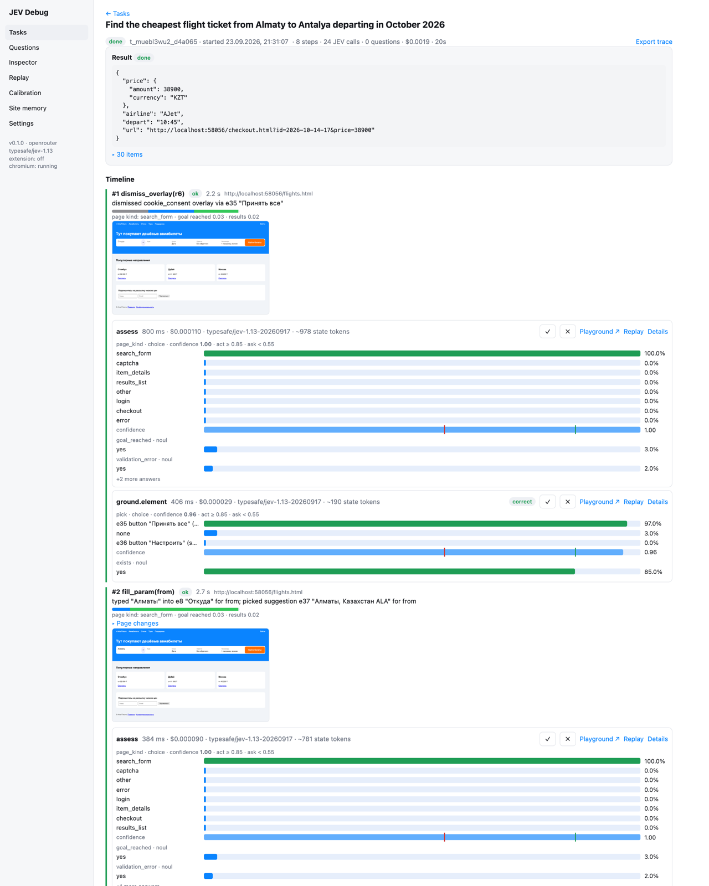

Why a decision model for browser agents?
| LLM-only browser agent | jev-mcp with JEV | |
|---|---|---|
| Per decision | 2–20 seconds | ~100 ms |
| Cost | cents per step | $0.042 / million input tokens, output free |
| Output | free text to parse | typed choice, score, yes/no |
| Uncertainty | overconfident | calibrated: act, double-check or ask |
| Agent context | HTML dumps and screenshots | compact, filtered page views |
Features
Autonomous tasks
Goal, params and a result schema in. Out come dismissed consent walls, filled autocompletes and date pickers, a submitted search and extracted results with min/max selection.
Page understanding
DOM, accessibility tree and paint order become regions and stable element refs. Unlabeled inputs get names, and occlusion, shadow DOM and cross-origin iframes are handled.
Human in the loop
Low-confidence decisions become questions with candidates and probabilities. They arrive through Claude Code channels, jev watch or any tool result.
Your Chrome or ours
A paired Chrome extension drives your logged-in browser, with a side panel. Otherwise jev-mcp uses its own headful or headless Chrome profile.
Safety gates
Irreversible actions ask first, secrets are never shown to the model, hidden prompt-injection text is dropped, and domain allow-lists and budgets are enforced.
Debug UI and calibration
Probability bars for every decision, replay, TypeSafe playground links, site memory and reliability diagrams that suggest thresholds.
Measured results
On the airline-search fixture (Russian UI, consent wall, autocomplete, low-fare calendar, pagination), the task "cheapest flight Almaty → Antalya in October" finished in 8 steps, 24 JEV calls, 0 questions, $0.0019, 19 s. The grounding eval scored 41/41 (100%) with an expected calibration error of 0.02. On live aviasales.kz, JEV went through consent, autocomplete, the low-fare calendar and a results tab that opened separately.

Quick start
git clone https://github.com/legostin/jev-mcp.git && cd jev-mcp
npm install && npm run build:web
node bin/jev.mjs install # Claude Code + Codex MCP, skill, `jev` CLI
jev settings set providers.openrouter.apiKey - # paste the key, Enter, Ctrl-D (or: jev settings set provider typesafe)
jev doctorUse your own Chrome (recommended for sites with logins or bot checks): load dist/extension (or the zip from Releases) with Load unpacked in chrome://extensions, run jev pair and enter the code in the JEV side panel.
Then ask your agent: "Find the cheapest flight from Almaty to Antalya in October on aviasales.kz". It calls jev_task and keeps working while JEV runs. Questions arrive through Claude Code channels, jev watch, or appended to any jev tool result. See the troubleshooting guide.
MCP tools
jev_task, jev_status, jev_wait, jev_answer, jev_control, jev_result | Autonomous tasks and their questions |
jev_observe, jev_find, jev_ask | Cheap page understanding and custom typed questions |
jev_act, jev_tabs, jev_screenshot | Direct, trusted browser control |
jev_trace, jev_settings, jev_doctor | Traces, settings and diagnostics |
FAQ
What is JEV?
JEV is TypeSafe AI's first System One model. It returns typed decisions (choice, score, yes/no) with calibrated probabilities instead of generating text. See the TypeSafe docs and the OpenRouter guide.
How is it different from Playwright MCP or browser-use?
Those tools route every decision through an LLM. jev-mcp moves grounding, assessment and verification to JEV, which is much cheaper and faster and has calibrated confidence. Your agent still does the planning and handles ambiguity.
Which agents can use it?
Any MCP client: Claude Code (with optional channel push), Codex, Cursor and others over stdio.
Can it use my logged-in Chrome?
Yes, through the Chrome extension after a one-time pairing. Without the extension it uses its own profile.
How much does it cost?
jev-mcp is free (MIT). JEV costs $0.042 per million input tokens and output is free; a typical task costs a fraction of a cent.
Is it safe to let it click?
Payments, orders, messages and deletions always ask first, secrets never reach the model, and every decision is traced locally.